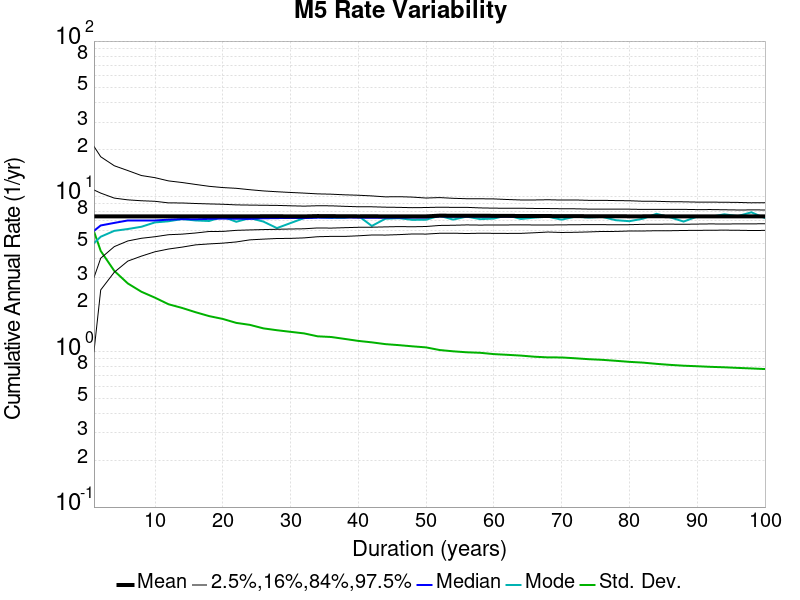
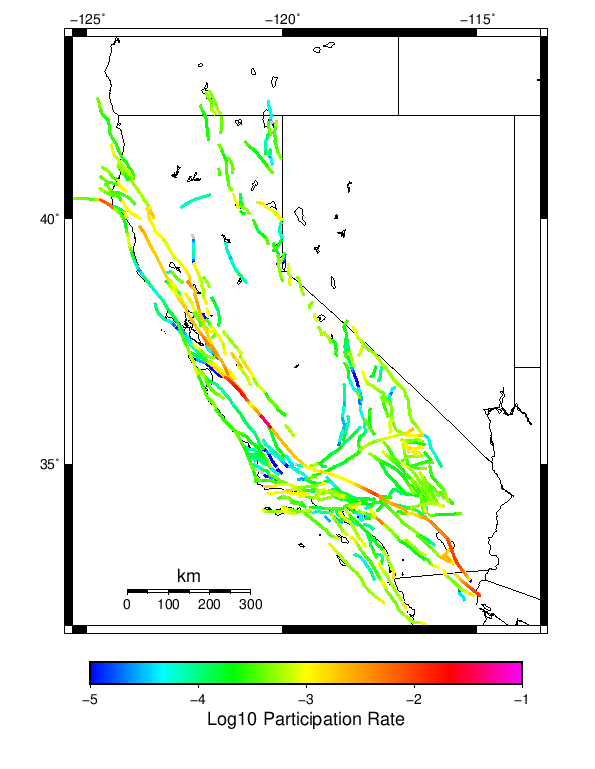
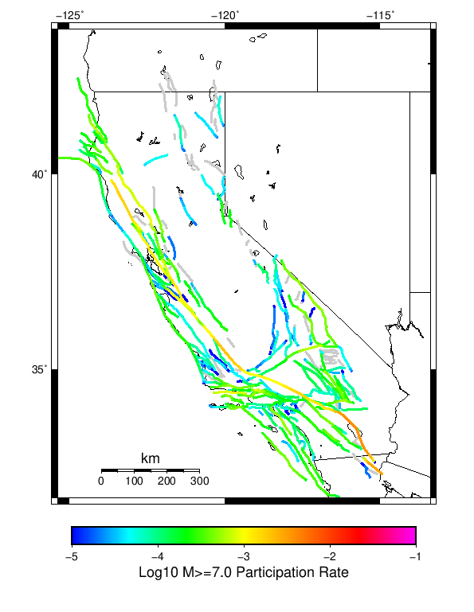

Start 1919, 100 yr, Spontaneous, Historical Catalog Results
| Start 1919, 100 yr, Spontaneous, Historical Catalog |
|---|
| Num Simulations | 1000 |
| Start Time | 1919/01/01 00:00:00 UTC |
| Start Time Epoch Milliseconds | -1609459200000 |
| Duration | 100 Years |
| Includes Spontaneous? | true |
| Trigger Ruptures | (none) |
| Historical Ruptures | 165 Trigger Ruptures |
| First: M7.3 at 1852/01/05 04:40:39 UTC |
| Last: M6.5 at 1918/07/15 00:24:39 UTC |
| Largest: M7.9 at 1857/01/09 16:25:39 UTC |
| Config Generated With | u3etas_config_builder.sh --start-year 1919 --num-simulations 1000 --duration-years 100 --include-spontaneous --historical-catalog --hpc-site USC_HPC --nodes 36 --hours 24 --queue scec |
Table Of Contents
Magnitude Frequency Distribution
(top)
Legend
- Mean (thick black line): mean annual rate across all 1000 catalogs
- 2.5%,97.5% (thin black lines): annual rate percentiles across all 1000 catalogs
- Median (thin blue line): median annual rate across all 1000 catalogs
- Mode (thin cyan line): modal annual rate across all 1000 catalogs (scaled to annualized value)
- 100 yr Probability (thin red line): 100 year probability calculated as the fraction of catalogs with at least 1 occurrence
- 100 yr Supraseismogenic Probability (thin dashed red line): same as above, but only for supraseismogenic ruptures on explicitly modeled UCERF3 faults
- 95% Conf (light red shaded region): binomial 95% confidence bounds on probability

| Mag | Mean | 2.5 %ile | 97.5 %ile | Median | Mode | 100 yr Probability | 100 yr Supra-Seis Prob |
|---|
| M≥5 | 7.437 | 6.040 | 9.110 | 7.380 | 7.250 | 1.000 (100.00%) | 1.000 (100.00%) |
| M≥5.1 | 5.889 | 4.750 | 7.270 | 5.850 | 5.700 | 1.000 (100.00%) | 1.000 (100.00%) |
| M≥5.2 | 4.658 | 3.720 | 5.770 | 4.620 | 4.560 | 1.000 (100.00%) | 1.000 (100.00%) |
| M≥5.3 | 3.679 | 2.890 | 4.550 | 3.660 | 3.630 | 1.000 (100.00%) | 1.000 (100.00%) |
| M≥5.4 | 2.903 | 2.250 | 3.640 | 2.890 | 2.730 | 1.000 (100.00%) | 1.000 (100.00%) |
| M≥5.5 | 2.286 | 1.740 | 2.890 | 2.270 | 2.260 | 1.000 (100.00%) | 1.000 (100.00%) |
| M≥5.6 | 1.793 | 1.360 | 2.280 | 1.780 | 1.740 | 1.000 (100.00%) | 1.000 (100.00%) |
| M≥5.7 | 1.403 | 1.050 | 1.810 | 1.400 | 1.310 | 1.000 (100.00%) | 1.000 (100.00%) |
| M≥5.8 | 1.092 | 0.800 | 1.420 | 1.080 | 0.990 | 1.000 (100.00%) | 1.000 (100.00%) |
| M≥5.9 | 0.837 | 0.600 | 1.090 | 0.830 | 0.830 | 1.000 (100.00%) | 1.000 (100.00%) |
| M≥6 | 0.664 | 0.470 | 0.880 | 0.660 | 0.660 | 1.000 (100.00%) | 1.000 (100.00%) |
| M≥6.1 | 0.508 | 0.340 | 0.690 | 0.510 | 0.530 | 1.000 (100.00%) | 1.000 (100.00%) |
| M≥6.2 | 0.399 | 0.260 | 0.560 | 0.390 | 0.370 | 1.000 (100.00%) | 1.000 (100.00%) |
| M≥6.3 | 0.312 | 0.190 | 0.450 | 0.310 | 0.290 | 1.000 (100.00%) | 1.000 (100.00%) |
| M≥6.4 | 0.239 | 0.140 | 0.360 | 0.240 | 0.240 | 1.000 (100.00%) | 1.000 (100.00%) |
| M≥6.5 | 0.183 | 0.100 | 0.280 | 0.180 | 0.150 | 1.000 (100.00%) | 1.000 (100.00%) |
| M≥6.6 | 0.139 | 0.070 | 0.220 | 0.140 | 0.130 | 1.000 (100.00%) | 1.000 (100.00%) |
| M≥6.7 | 0.104 | 0.050 | 0.180 | 0.100 | 0.100 | 1.000 (100.00%) | 1.000 (100.00%) |
| M≥6.8 | 0.078 | 0.030 | 0.140 | 0.080 | 0.080 | 1.000 (100.00%) | 0.999 (99.90%) |
| M≥6.9 | 0.059 | 0.020 | 0.110 | 0.060 | 0.050 | 0.999 (99.90%) | 0.997 (99.70%) |
| M≥7 | 0.044 | 0.010 | 0.090 | 0.040 | 0.040 | 0.991 (99.10%) | 0.982 (98.20%) |
| M≥7.1 | 0.032 | 0.000 | 0.070 | 0.030 | 0.020 | 0.963 (96.30%) | 0.947 (94.70%) |
| M≥7.2 | 0.023 | 0.000 | 0.060 | 0.020 | 0.020 | 0.907 (90.70%) | 0.885 (88.50%) |
| M≥7.3 | 0.017 | 0.000 | 0.050 | 0.010 | 0.010 | 0.821 (82.10%) | 0.807 (80.70%) |
| M≥7.4 | 0.011 | 0.000 | 0.040 | 0.010 | 0.010 | 0.678 (67.80%) | 0.669 (66.90%) |
| M≥7.5 | 6.93E-3 | 0.000 | 0.030 | 0.010 | 0.000 | 0.508 (50.80%) | 0.502 (50.20%) |
| M≥7.6 | 4.34E-3 | 0.000 | 0.020 | 0.000 | 0.000 | 0.366 (36.60%) | 0.363 (36.30%) |
| M≥7.7 | 2.39E-3 | 0.000 | 0.010 | 0.000 | 0.000 | 0.220 (22.00%) | 0.219 (21.90%) |
| M≥7.8 | 1.22E-3 | 0.000 | 0.010 | 0.000 | 0.000 | 0.119 (11.90%) | 0.119 (11.90%) |
| M≥7.9 | 6.70E-4 | 0.000 | 0.010 | 0.000 | 0.000 | 0.067 (6.70%) | 0.067 (6.70%) |
| M≥8 | 3.30E-4 | 0.000 | 0.010 | 0.000 | 0.000 | 0.033 (3.30%) | 0.033 (3.30%) |
| M≥8.1 | 8.00E-5 | 0.000 | 0.000 | 0.000 | 0.000 | 8.00E-3 (0.80%) | 8.00E-3 (0.80%) |
| M≥8.2 | 1.00E-5 | 0.000 | 0.000 | 0.000 | 0.000 | 1.00E-3 (0.10%) | 1.00E-3 (0.10%) |
| M≥8.3 | 0.000 | 0.000 | 0.000 | 0.000 | 0.000 | 0.000 (0.00%) | 0.000 (0.00%) |
| M≥8.4 | 0.000 | 0.000 | 0.000 | 0.000 | 0.000 | 0.000 (0.00%) | 0.000 (0.00%) |
| M≥8.5 | 0.000 | 0.000 | 0.000 | 0.000 | 0.000 | 0.000 (0.00%) | 0.000 (0.00%) |
| M≥8.6 | 0.000 | 0.000 | 0.000 | 0.000 | 0.000 | 0.000 (0.00%) | 0.000 (0.00%) |
| M≥8.7 | 0.000 | 0.000 | 0.000 | 0.000 | 0.000 | 0.000 (0.00%) | 0.000 (0.00%) |
| M≥8.8 | 0.000 | 0.000 | 0.000 | 0.000 | 0.000 | 0.000 (0.00%) | 0.000 (0.00%) |
| M≥8.9 | 0.000 | 0.000 | 0.000 | 0.000 | 0.000 | 0.000 (0.00%) | 0.000 (0.00%) |
| M≥9 | 0.000 | 0.000 | 0.000 | 0.000 | 0.000 | 0.000 (0.00%) | 0.000 (0.00%) |
Long Term Rate Variability
(top)
80 Year Variability
(top)
Download CSV Here
| Magnitude | Mean | Median | Mode | Std. Dev. | 2.5 %-ile | 16 %-ile | 84 %-ile | 97.5 %-ile |
|---|
| 5.0 | 7.442875 | 7.375 | 6.925 | 0.86061656 | 5.9875 | 6.575 | 8.275 | 9.375 |
| 5.1 | 5.891875 | 5.85 | 5.925 | 0.7051651 | 4.6625 | 5.1875 | 6.6125 | 7.425 |
| 5.2 | 4.6590624 | 4.625 | 4.5 | 0.5742838 | 3.6375 | 4.075 | 5.2125 | 5.8875 |
| 5.3 | 3.679125 | 3.65 | 3.6875 | 0.47498074 | 2.825 | 3.1875 | 4.125 | 4.7 |
| 5.4 | 2.9042 | 2.8875 | 2.925 | 0.38810095 | 2.1875 | 2.525 | 3.275 | 3.75 |
| 5.5 | 2.2878876 | 2.275 | 2.325 | 0.3198297 | 1.7 | 1.975 | 2.5875 | 3.0125 |
| 5.6 | 1.7959125 | 1.7875 | 1.8 | 0.26134545 | 1.325 | 1.5375 | 2.05 | 2.35 |
| 5.7 | 1.4060374 | 1.4 | 1.4 | 0.21129712 | 1.025 | 1.2 | 1.6 | 1.8625 |
| 5.8 | 1.0954375 | 1.0875 | 1.0625 | 0.17564668 | 0.775 | 0.925 | 1.25 | 1.4625 |
| 5.9 | 0.838925 | 0.8375 | 0.85 | 0.14466931 | 0.575 | 0.7 | 0.975 | 1.15 |
| 6.0 | 0.666275 | 0.6625 | 0.6375 | 0.1211073 | 0.45 | 0.55 | 0.7875 | 0.9125 |
| 6.1 | 0.5080625 | 0.5 | 0.45 | 0.10221595 | 0.325 | 0.4 | 0.6 | 0.725 |
| 6.2 | 0.3982875 | 0.3875 | 0.3875 | 0.08674711 | 0.25 | 0.3125 | 0.4875 | 0.5875 |
| 6.3 | 0.3118 | 0.3 | 0.2875 | 0.072718106 | 0.1875 | 0.2375 | 0.3875 | 0.4625 |
| 6.4 | 0.23925 | 0.2375 | 0.225 | 0.06192352 | 0.1375 | 0.175 | 0.3 | 0.375 |
| 6.5 | 0.1820625 | 0.175 | 0.1875 | 0.053221095 | 0.0875 | 0.125 | 0.2375 | 0.3 |
| 6.6 | 0.13765 | 0.1375 | 0.1375 | 0.045254424 | 0.0625 | 0.1 | 0.175 | 0.2375 |
| 6.7 | 0.1025875 | 0.1 | 0.1 | 0.038478132 | 0.0375 | 0.0625 | 0.1375 | 0.1875 |
| 6.8 | 0.0772125 | 0.075 | 0.0625 | 0.032356344 | 0.025 | 0.05 | 0.1125 | 0.15 |
| 6.9 | 0.0575125 | 0.05 | 0.05 | 0.02759266 | 0.0125 | 0.025 | 0.0875 | 0.1125 |
| 7.0 | 0.0424625 | 0.0375 | 0.025 | 0.023871524 | 0.0 | 0.025 | 0.0625 | 0.1 |
| 7.1 | 0.03085 | 0.025 | 0.025 | 0.020154 | 0.0 | 0.0125 | 0.05 | 0.075 |
| 7.2 | 0.0217875 | 0.025 | 0.0125 | 0.016746014 | 0.0 | 0.0 | 0.0375 | 0.0625 |
| 7.3 | 0.0158125 | 0.0125 | 0.0125 | 0.014042553 | 0.0 | 0.0 | 0.025 | 0.05 |
| 7.4 | 0.010475 | 0.0125 | 0.0 | 0.011582683 | 0.0 | 0.0 | 0.025 | 0.0375 |
| 7.5 | 0.0064 | 0.0 | 0.0 | 0.008859656 | 0.0 | 0.0 | 0.0125 | 0.025 |
| 7.6 | 0.0038625 | 0.0 | 0.0 | 0.0067755627 | 0.0 | 0.0 | 0.0125 | 0.025 |
| 7.7 | 0.0020375 | 0.0 | 0.0 | 0.0049146716 | 0.0 | 0.0 | 0.0 | 0.0125 |
| 7.8 | 8.875E-4 | 0.0 | 0.0 | 0.0032602488 | 0.0 | 0.0 | 0.0 | 0.0125 |
| 7.9 | 4.0E-4 | 0.0 | 0.0 | 0.0022011008 | 0.0 | 0.0 | 0.0 | 0.0125 |
| 8.0 | 1.75E-4 | 0.0 | 0.0 | 0.0014693652 | 0.0 | 0.0 | 0.0 | 0.0 |
| 8.1 | 2.5E-5 | 0.0 | 0.0 | 5.5873714E-4 | 0.0 | 0.0 | 0.0 | 0.0 |
| 8.2 | 0.0 | 0.0 | 0.0 | 0.0 | 0.0 | 0.0 | 0.0 | 0.0 |
| 8.3 | 0.0 | 0.0 | 0.0 | 0.0 | 0.0 | 0.0 | 0.0 | 0.0 |
| 8.4 | 0.0 | 0.0 | 0.0 | 0.0 | 0.0 | 0.0 | 0.0 | 0.0 |
| 8.5 | 0.0 | 0.0 | 0.0 | 0.0 | 0.0 | 0.0 | 0.0 | 0.0 |
| 8.6 | 0.0 | 0.0 | 0.0 | 0.0 | 0.0 | 0.0 | 0.0 | 0.0 |
| 8.7 | 0.0 | 0.0 | 0.0 | 0.0 | 0.0 | 0.0 | 0.0 | 0.0 |
| 8.8 | 0.0 | 0.0 | 0.0 | 0.0 | 0.0 | 0.0 | 0.0 | 0.0 |
| 8.9 | 0.0 | 0.0 | 0.0 | 0.0 | 0.0 | 0.0 | 0.0 | 0.0 |
| 9.0 | 0.0 | 0.0 | 0.0 | 0.0 | 0.0 | 0.0 | 0.0 | 0.0 |
28 Year Variability
(top)

Download CSV Here
| Magnitude | Mean | Median | Mode | Std. Dev. | 2.5 %-ile | 16 %-ile | 84 %-ile | 97.5 %-ile |
|---|
| 5.0 | 7.448345 | 7.25 | 6.25 | 1.3754982 | 5.357143 | 6.142857 | 8.75 | 10.714286 |
| 5.1 | 5.896548 | 5.75 | 5.821429 | 1.128761 | 4.178571 | 4.821429 | 6.964286 | 8.535714 |
| 5.2 | 4.6630955 | 4.535714 | 4.071429 | 0.92391276 | 3.2142856 | 3.7857144 | 5.571429 | 6.785714 |
| 5.3 | 3.6827261 | 3.607143 | 3.6785715 | 0.75893825 | 2.5 | 2.9642856 | 4.392857 | 5.428571 |
| 5.4 | 2.9065952 | 2.8214285 | 2.607143 | 0.6207708 | 1.9285715 | 2.3214285 | 3.5 | 4.321429 |
| 5.5 | 2.2895477 | 2.25 | 2.2142856 | 0.5117151 | 1.4642857 | 1.7857143 | 2.7857144 | 3.4642856 |
| 5.6 | 1.7962143 | 1.75 | 1.7857143 | 0.42206386 | 1.1071428 | 1.3928572 | 2.1785715 | 2.75 |
| 5.7 | 1.4057024 | 1.3571428 | 1.2142857 | 0.35074592 | 0.8214286 | 1.0714285 | 1.75 | 2.1785715 |
| 5.8 | 1.0952858 | 1.0714285 | 1.0714285 | 0.2933915 | 0.60714287 | 0.8214286 | 1.3928572 | 1.75 |
| 5.9 | 0.839381 | 0.8214286 | 0.8214286 | 0.24205041 | 0.42857143 | 0.60714287 | 1.0714285 | 1.3928572 |
| 6.0 | 0.66661906 | 0.64285713 | 0.5714286 | 0.2047448 | 0.32142857 | 0.4642857 | 0.85714287 | 1.1428572 |
| 6.1 | 0.5089167 | 0.5 | 0.4642857 | 0.17379038 | 0.21428572 | 0.32142857 | 0.6785714 | 0.89285713 |
| 6.2 | 0.3992738 | 0.39285713 | 0.35714287 | 0.1485237 | 0.14285715 | 0.25 | 0.53571427 | 0.71428573 |
| 6.3 | 0.31244048 | 0.2857143 | 0.25 | 0.12493745 | 0.10714286 | 0.17857143 | 0.42857143 | 0.60714287 |
| 6.4 | 0.23967858 | 0.21428572 | 0.21428572 | 0.10594817 | 0.071428575 | 0.14285715 | 0.35714287 | 0.4642857 |
| 6.5 | 0.18233334 | 0.17857143 | 0.14285715 | 0.08988146 | 0.035714287 | 0.10714286 | 0.2857143 | 0.39285713 |
| 6.6 | 0.13798809 | 0.14285715 | 0.10714286 | 0.07785384 | 0.0 | 0.071428575 | 0.21428572 | 0.32142857 |
| 6.7 | 0.102988094 | 0.10714286 | 0.071428575 | 0.06493621 | 0.0 | 0.035714287 | 0.17857143 | 0.25 |
| 6.8 | 0.07775 | 0.071428575 | 0.071428575 | 0.05503318 | 0.0 | 0.035714287 | 0.14285715 | 0.21428572 |
| 6.9 | 0.05804762 | 0.035714287 | 0.035714287 | 0.04742806 | 0.0 | 0.0 | 0.10714286 | 0.17857143 |
| 7.0 | 0.043011904 | 0.035714287 | 0.035714287 | 0.041172612 | 0.0 | 0.0 | 0.071428575 | 0.14285715 |
| 7.1 | 0.03127381 | 0.035714287 | 0.0 | 0.034953695 | 0.0 | 0.0 | 0.071428575 | 0.10714286 |
| 7.2 | 0.02202381 | 0.0 | 0.0 | 0.028925063 | 0.0 | 0.0 | 0.035714287 | 0.10714286 |
| 7.3 | 0.016095238 | 0.0 | 0.0 | 0.024633145 | 0.0 | 0.0 | 0.035714287 | 0.071428575 |
| 7.4 | 0.01077381 | 0.0 | 0.0 | 0.0198881 | 0.0 | 0.0 | 0.035714287 | 0.071428575 |
| 7.5 | 0.006619048 | 0.0 | 0.0 | 0.015528442 | 0.0 | 0.0 | 0.035714287 | 0.035714287 |
| 7.6 | 0.004011905 | 0.0 | 0.0 | 0.012045432 | 0.0 | 0.0 | 0.0 | 0.035714287 |
| 7.7 | 0.0021309524 | 0.0 | 0.0 | 0.008659725 | 0.0 | 0.0 | 0.0 | 0.035714287 |
| 7.8 | 9.404762E-4 | 0.0 | 0.0 | 0.005719689 | 0.0 | 0.0 | 0.0 | 0.035714287 |
| 7.9 | 4.6428572E-4 | 0.0 | 0.0 | 0.0040461747 | 0.0 | 0.0 | 0.0 | 0.0 |
| 8.0 | 1.9047619E-4 | 0.0 | 0.0 | 0.0026016717 | 0.0 | 0.0 | 0.0 | 0.0 |
| 8.1 | 4.7619047E-5 | 0.0 | 0.0 | 0.0013034489 | 0.0 | 0.0 | 0.0 | 0.0 |
| 8.2 | 0.0 | 0.0 | 0.0 | 0.0 | 0.0 | 0.0 | 0.0 | 0.0 |
| 8.3 | 0.0 | 0.0 | 0.0 | 0.0 | 0.0 | 0.0 | 0.0 | 0.0 |
| 8.4 | 0.0 | 0.0 | 0.0 | 0.0 | 0.0 | 0.0 | 0.0 | 0.0 |
| 8.5 | 0.0 | 0.0 | 0.0 | 0.0 | 0.0 | 0.0 | 0.0 | 0.0 |
| 8.6 | 0.0 | 0.0 | 0.0 | 0.0 | 0.0 | 0.0 | 0.0 | 0.0 |
| 8.7 | 0.0 | 0.0 | 0.0 | 0.0 | 0.0 | 0.0 | 0.0 | 0.0 |
| 8.8 | 0.0 | 0.0 | 0.0 | 0.0 | 0.0 | 0.0 | 0.0 | 0.0 |
| 8.9 | 0.0 | 0.0 | 0.0 | 0.0 | 0.0 | 0.0 | 0.0 | 0.0 |
| 9.0 | 0.0 | 0.0 | 0.0 | 0.0 | 0.0 | 0.0 | 0.0 | 0.0 |
Variability Duration Dependence
(top)

Download CSV Here
| Duration (years) | Mean | Median | Mode | Std. Dev. | 2.5 %-ile | 16 %-ile | 84 %-ile | 97.5 %-ile |
|---|
| 1.0 | 7.43677 | 6.0 | 5.0 | 5.958454 | 1.0 | 3.0 | 11.0 | 21.0 |
| 2.0 | 7.43677 | 6.5 | 5.5 | 4.4560423 | 2.5 | 4.0 | 10.5 | 18.0 |
| 4.0 | 7.43677 | 6.75 | 6.0 | 3.3152344 | 3.25 | 4.75 | 9.75 | 15.75 |
| 6.0 | 7.4347606 | 7.0 | 6.1666665 | 2.751444 | 3.8333333 | 5.1666665 | 9.5 | 14.666667 |
| 8.0 | 7.4347606 | 7.0 | 6.375 | 2.4333723 | 4.125 | 5.375 | 9.375 | 13.625 |
| 10.0 | 7.43677 | 7.0 | 6.8 | 2.2287111 | 4.4 | 5.5 | 9.3 | 13.2 |
| 12.0 | 7.4347606 | 7.0833335 | 6.9166665 | 2.0216336 | 4.5833335 | 5.6666665 | 9.083333 | 12.583333 |
| 14.0 | 7.433582 | 7.142857 | 7.142857 | 1.9141629 | 4.714286 | 5.714286 | 9.071428 | 12.285714 |
| 16.0 | 7.4347606 | 7.125 | 7.0 | 1.7961597 | 4.875 | 5.8125 | 9.0 | 11.9375 |
| 18.0 | 7.438 | 7.1666665 | 6.9444447 | 1.6952453 | 4.9444447 | 5.9444447 | 8.944445 | 11.611111 |
| 20.0 | 7.43677 | 7.2 | 7.4 | 1.6264927 | 5.0 | 5.95 | 8.9 | 11.4 |
| 22.0 | 7.438182 | 7.181818 | 6.8636365 | 1.533472 | 5.090909 | 6.0454545 | 8.818182 | 11.272727 |
| 24.0 | 7.4347606 | 7.1666665 | 7.25 | 1.4894193 | 5.25 | 6.0833335 | 8.791667 | 11.041667 |
| 26.0 | 7.4466667 | 7.230769 | 6.8846154 | 1.4138308 | 5.3076925 | 6.1153846 | 8.769231 | 10.846154 |
| 28.0 | 7.448345 | 7.25 | 6.25 | 1.3754982 | 5.357143 | 6.142857 | 8.75 | 10.714286 |
| 30.0 | 7.438 | 7.266667 | 6.733333 | 1.3432 | 5.366667 | 6.1666665 | 8.7 | 10.6 |
| 32.0 | 7.4347606 | 7.25 | 7.25 | 1.3124456 | 5.40625 | 6.1875 | 8.65625 | 10.5 |
| 34.0 | 7.472353 | 7.2941175 | 7.352941 | 1.2567421 | 5.5 | 6.2647057 | 8.705882 | 10.382353 |
| 36.0 | 7.4607778 | 7.3055553 | 7.2777777 | 1.2440358 | 5.5277777 | 6.25 | 8.694445 | 10.333333 |
| 38.0 | 7.4503946 | 7.3157897 | 7.2894735 | 1.2091854 | 5.5263157 | 6.2894735 | 8.631579 | 10.236842 |
| 40.0 | 7.442875 | 7.3 | 7.5 | 1.1740886 | 5.575 | 6.325 | 8.575 | 10.175 |
| 42.0 | 7.448345 | 7.285714 | 6.452381 | 1.1490189 | 5.642857 | 6.3333335 | 8.571428 | 10.071428 |
| 44.0 | 7.438182 | 7.2954545 | 7.181818 | 1.1191897 | 5.6363635 | 6.3636365 | 8.522727 | 9.931818 |
| 46.0 | 7.4367285 | 7.304348 | 7.2391305 | 1.1024679 | 5.673913 | 6.3913045 | 8.5 | 9.956522 |
| 48.0 | 7.4347606 | 7.3125 | 7.0625 | 1.0831758 | 5.7291665 | 6.375 | 8.458333 | 9.895833 |
| 50.0 | 7.43677 | 7.32 | 7.08 | 1.0665352 | 5.72 | 6.4 | 8.48 | 9.76 |
| 52.0 | 7.517058 | 7.4423075 | 7.5 | 1.0255202 | 5.7884617 | 6.5 | 8.519231 | 9.826923 |
| 54.0 | 7.508796 | 7.4074073 | 7.0925927 | 1.006192 | 5.796296 | 6.5185184 | 8.5 | 9.722222 |
| 56.0 | 7.5120716 | 7.428571 | 7.410714 | 0.9917516 | 5.767857 | 6.553571 | 8.5 | 9.660714 |
| 58.0 | 7.5036035 | 7.413793 | 7.137931 | 0.98429346 | 5.793103 | 6.534483 | 8.431034 | 9.655172 |
| 60.0 | 7.4975166 | 7.4166665 | 7.2 | 0.9653119 | 5.7833333 | 6.55 | 8.4 | 9.633333 |
| 62.0 | 7.491097 | 7.403226 | 7.548387 | 0.9551926 | 5.774194 | 6.548387 | 8.387096 | 9.548388 |
| 64.0 | 7.4803123 | 7.375 | 7.15625 | 0.94431776 | 5.78125 | 6.5625 | 8.390625 | 9.484375 |
| 66.0 | 7.474212 | 7.3636365 | 7.3030305 | 0.92866206 | 5.8333335 | 6.5454545 | 8.363636 | 9.484848 |
| 68.0 | 7.472353 | 7.397059 | 7.397059 | 0.91944283 | 5.897059 | 6.5441175 | 8.3529415 | 9.514706 |
| 70.0 | 7.4681287 | 7.385714 | 7.0857143 | 0.91861033 | 5.857143 | 6.5571427 | 8.328571 | 9.471429 |
| 72.0 | 7.4607778 | 7.388889 | 7.4027777 | 0.9075309 | 5.875 | 6.5694447 | 8.319445 | 9.486111 |
| 74.0 | 7.4554863 | 7.3783784 | 7.310811 | 0.89522743 | 5.9054055 | 6.581081 | 8.283784 | 9.432432 |
| 76.0 | 7.4503946 | 7.381579 | 7.381579 | 0.88683623 | 5.9473686 | 6.5789475 | 8.276316 | 9.434211 |
| 78.0 | 7.4466667 | 7.3717947 | 7.025641 | 0.8742163 | 5.948718 | 6.5641026 | 8.282051 | 9.397436 |
| 80.0 | 7.442875 | 7.375 | 6.925 | 0.86061656 | 5.9875 | 6.575 | 8.275 | 9.375 |
| 82.0 | 7.443598 | 7.365854 | 7.1829267 | 0.85091066 | 5.987805 | 6.609756 | 8.243902 | 9.304878 |
| 84.0 | 7.448345 | 7.3809524 | 7.7261906 | 0.83547115 | 6.0119047 | 6.6190476 | 8.25 | 9.297619 |
| 86.0 | 7.4403605 | 7.395349 | 7.337209 | 0.82302654 | 6.0116277 | 6.627907 | 8.244186 | 9.244186 |
| 88.0 | 7.438182 | 7.3863635 | 6.8863635 | 0.81289357 | 6.034091 | 6.6136365 | 8.25 | 9.227273 |
| 90.0 | 7.438 | 7.388889 | 7.411111 | 0.80638325 | 6.0444446 | 6.633333 | 8.222222 | 9.188889 |
| 92.0 | 7.4367285 | 7.3913045 | 7.3913045 | 0.7992516 | 6.054348 | 6.652174 | 8.228261 | 9.184783 |
| 94.0 | 7.4328194 | 7.393617 | 7.6702127 | 0.7939593 | 6.06383 | 6.638298 | 8.202127 | 9.170213 |
| 96.0 | 7.4347606 | 7.3958335 | 7.46875 | 0.7868332 | 6.0520835 | 6.65625 | 8.177083 | 9.145833 |
| 98.0 | 7.433582 | 7.387755 | 7.897959 | 0.7804571 | 6.0306125 | 6.6530614 | 8.183674 | 9.091837 |
| 100.0 | 7.43677 | 7.38 | 7.25 | 0.7734033 | 6.04 | 6.67 | 8.18 | 9.11 |
Simulation Stationarity
(top)
Section Participation
(top)
Section Participation Plots
(top)
| Min Mag | Complete Catalog (including spontaneous) |
|---|
| All Supra. Seis. |  |
| M≥6.5 |  |
| M≥7 |  |
| M≥7.5 |  |
| M≥8 |  |
Supra-Seismogenic Parent Sections Table
(top)
First 10 of 313 with matching ruptures shown
| Parent Name | Total Mean Annual Rate | Total 100 Year Prob |
|---|
| San Andreas (Parkfield) | 0.0428 | 0.999 |
| San Andreas (Creeping Section) 2011 CFM | 0.02465 | 0.954 |
| San Andreas (Mojave S) | 0.01625 | 0.843 |
| Mendocino | 0.01392 | 0.797 |
| Cerro Prieto | 0.01174 | 0.783 |
| Imperial | 0.01149 | 0.784 |
| Brawley (Seismic Zone) alt 1 | 0.01027 | 0.748 |
| Hunting Creek - Berryessa 2011 CFM | 0.00632 | 0.481 |
| Hayward (So) 2011 CFM | 0.00628 | 0.518 |
| San Andreas (Coachella) rev | 0.00595 | 0.533 |
M≥6.5 Parent Sections Table
(top)
First 10 of 303 with matching ruptures shown
| Parent Name | Total Mean Annual Rate | Total 100 Year Prob |
|---|
| Cerro Prieto | 0.00981 | 0.72 |
| Imperial | 0.00788 | 0.64 |
| Brawley (Seismic Zone) alt 1 | 0.0074 | 0.616 |
| San Andreas (Creeping Section) 2011 CFM | 0.00643 | 0.502 |
| Mendocino | 0.00523 | 0.443 |
| San Andreas (Coachella) rev | 0.00509 | 0.479 |
| Hayward (So) 2011 CFM | 0.00502 | 0.429 |
| San Andreas (San Bernardino N) | 0.00373 | 0.335 |
| San Andreas (San Bernardino S) | 0.0036 | 0.329 |
| San Andreas (Mojave S) | 0.00359 | 0.322 |
M≥7 Parent Sections Table
(top)
First 10 of 259 with matching ruptures shown
| Parent Name | Total Mean Annual Rate | Total 100 Year Prob |
|---|
| San Andreas (Coachella) rev | 0.0041 | 0.401 |
| Brawley (Seismic Zone) alt 1 | 0.0037 | 0.365 |
| Imperial | 0.00367 | 0.362 |
| San Andreas (San Gorgonio Pass-Garnet HIll) | 0.00315 | 0.31 |
| Cerro Prieto | 0.003 | 0.286 |
| San Andreas (Creeping Section) 2011 CFM | 0.0022 | 0.21 |
| San Andreas (Cholame) rev | 0.00215 | 0.209 |
| San Andreas (Carrizo) rev | 0.00203 | 0.196 |
| Maacama 2011 CFM | 0.00202 | 0.2 |
| San Andreas (San Bernardino N) | 0.00187 | 0.181 |
M≥7.5 Parent Sections Table
(top)
First 10 of 187 with matching ruptures shown
| Parent Name | Total Mean Annual Rate | Total 100 Year Prob |
|---|
| San Andreas (Mojave N) | 0.00114 | 0.113 |
| San Andreas (Coachella) rev | 0.00112 | 0.112 |
| San Andreas (San Gorgonio Pass-Garnet HIll) | 0.0011 | 0.11 |
| San Andreas (Mojave S) | 0.00105 | 0.105 |
| San Andreas (Big Bend) | 0.00104 | 0.104 |
| San Andreas (San Bernardino S) | 0.00102 | 0.102 |
| San Andreas (Carrizo) rev | 9.8E-4 | 0.098 |
| Brawley (Seismic Zone) alt 1 | 9.4E-4 | 0.094 |
| San Andreas (San Bernardino N) | 9.4E-4 | 0.094 |
| San Andreas (Cholame) rev | 9.2E-4 | 0.092 |
M≥8 Parent Sections Table
(top)
First 10 of 45 with matching ruptures shown
| Parent Name | Total Mean Annual Rate | Total 100 Year Prob |
|---|
| San Andreas (Mojave N) | 3.2E-4 | 0.032 |
| San Andreas (Mojave S) | 3.2E-4 | 0.032 |
| San Andreas (Big Bend) | 3.0E-4 | 0.03 |
| San Andreas (Carrizo) rev | 3.0E-4 | 0.03 |
| San Andreas (San Bernardino N) | 3.0E-4 | 0.03 |
| San Andreas (Cholame) rev | 2.8E-4 | 0.028 |
| San Andreas (Parkfield) | 2.5E-4 | 0.025 |
| San Andreas (Creeping Section) 2011 CFM | 2.0E-4 | 0.02 |
| San Andreas (Coachella) rev | 1.6E-4 | 0.016 |
| San Andreas (San Bernardino S) | 1.6E-4 | 0.016 |
Gridded Nucleation
(top)
| Min Mag | Complete Catalog (including spontaneous) |
|---|
| M≥5 | |
| M≥6 |  |
| M≥7 | |
(top)
{
"numSimulations": 1000,
"duration": 100.0,
"startYear": 1919,
"includeSpontaneous": true,
"randomSeed": 1566932682299,
"binaryOutput": true,
"binaryOutputFilters": [
{
"prefix": "results_complete",
"descendantsOnly": false
},
{
"prefix": "results_m5_preserve_chain",
"minMag": 5.0,
"preserveChainBelowMag": true,
"descendantsOnly": false
}
],
"forceRecalc": false,
"simulationName": "Start 1919, 100 yr, Spontaneous, Historical Catalog",
"numRetries": 3,
"outputDir": "${ETAS_SIM_DIR}/2019_08_27-Start1919_100yr_Spontaneous_HistoricalCatalog-includeSpont-histCatalog-full_td-scale1.14",
"triggerCatalog": "${ETAS_LAUNCHER}/inputs/u3_historical_catalog.txt",
"triggerCatalogSurfaceMappings": "${ETAS_LAUNCHER}/inputs/u3_historical_catalog_finite_fault_mappings.xml",
"treatTriggerCatalogAsSpontaneous": true,
"cacheDir": "${ETAS_LAUNCHER}/inputs/cache_fm3p1_ba",
"fssFile": "${ETAS_LAUNCHER}/inputs/2013_05_10-ucerf3p3-production-10runs_COMPOUND_SOL_FM3_1_SpatSeisU3_MEAN_BRANCH_AVG_SOL.zip",
"probModel": "FULL_TD",
"applySubSeisForSupraNucl": true,
"totRateScaleFactor": 1.14,
"gridSeisCorr": true,
"timeIndependentERF": false,
"griddedOnly": false,
"imposeGR": false,
"includeIndirectTriggering": true,
"gridSeisDiscr": 0.1,
"catalogCompletenessModel": "RELAXED",
"configCommand": "u3etas_config_builder.sh --start-year 1919 --num-simulations 1000 --duration-years 100 --include-spontaneous --historical-catalog --hpc-site USC_HPC --nodes 36 --hours 24 --queue scec",
"configTime": 1566932682299
}